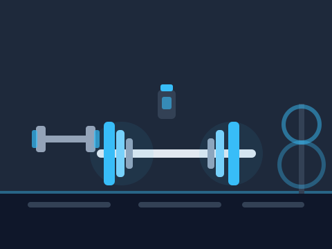

A simple weekly planner for the 6-day push/pull/legs split, a high-protein meal log, and cardio tracking — all in one place.

Enter your bodyweight and training frequency to get a rough daily calorie and protein estimate. For the full breakdown, use the Macro Calculator page.